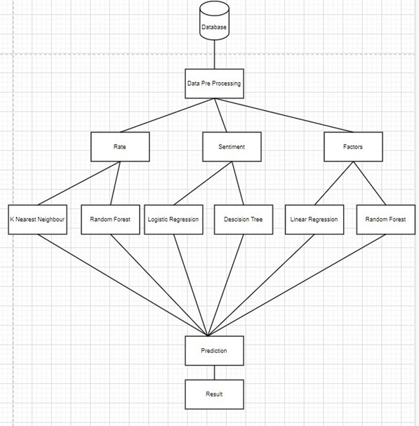

Abstract:
About 800,000 people die by suicide worldwide every year, of these 135,000 (17%) are residents of India, a nation with 17.5% of world population. Suicide Is increasing at an alarming rate all over the world. Hence to provide useful insights and to help fight this issue we chose ’Prediction and Analysis of suicide rates and its factors’ as our topic.
The domain of machine learning could help understand and analyze this problem. So we selected datasets including information about suicide rates over a period of time, factors for suicide and emotional factors that lead to a person to end his life. These datasets are initially pre-processed, and are then trained using various Machine Learning algorithms. The results will be visualized using various types of graphs and displayed on a front-end website. Insights obtained are used to Determine the reasons of suicides, mindset of a person Suicidal thoughts of a person This would be helpful to analyze and hopefully prevent further attempts of suicide, and to diagnose it.
Flowchart:

Datasets Used:
Our Analysis And Prediction:
1.Suicides with respect to GDP
2.Suicide Rate Analysis Comparison of Age Groups
3.Prediction Bar Plot for Overall Suicides in India

4.Initial Data Analysis And Preprocessing for top Suicide causes in India
5.Prection Line Plot for top Suicide causes using Linear Regression

Result:
The number of suicides is increasing year by year. The major factors include family problems, illness, prolonged illness and insanity, all of these factors will cause an increased number of suicides as per our prediction. A cause of concern is that many suicides are unclassified. Few emotions of a person including sadness, depression, anger, hypertension give suicidal thoughts .After being identified through a psychometric test, sufficient action needs to be taken.